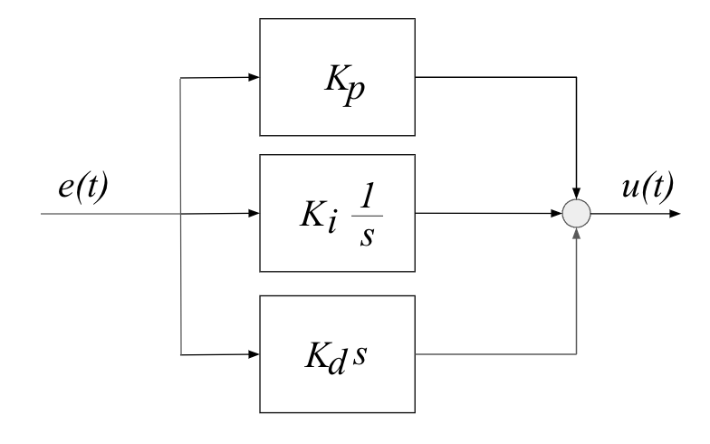
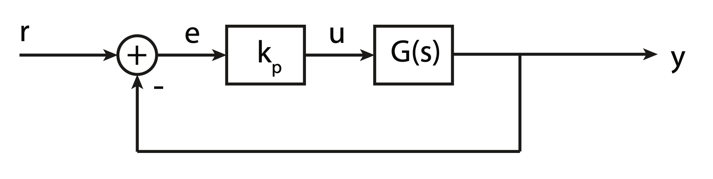
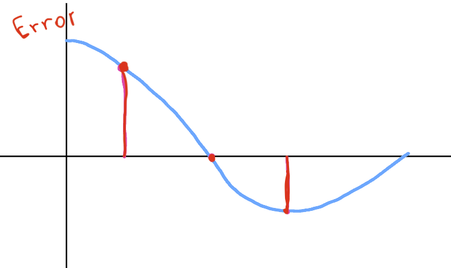
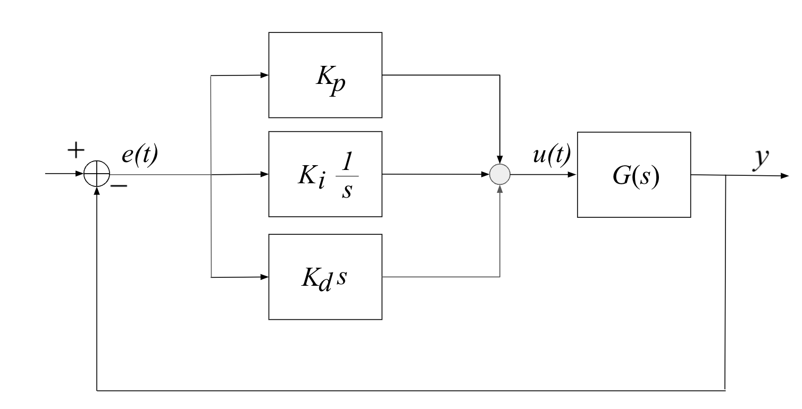
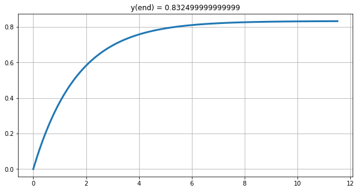
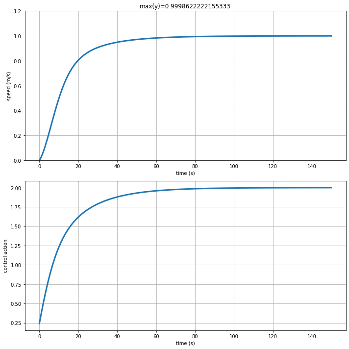

import numpy as np
import matplotlib.pyplot as plt
import controlPID Control
Introduction
- The PID controller is the most common form of feedback.
- Standard tool when process control emerged in the 1940s.
- In process control today, more than 95% of the control loops are of PID type
- Most loops are PI control.
- PID control is often combined with logic, sequential functions, selectors, and simple function blocks to build more complicated automation systems
- Sophisticated control strategies, such as model predictive control, are also organized hierarchically.
- PID control is used at the lowest level: high level controller gives the setpoints (the reference variables) to the controllers at the lower level.
Standard Feedback Loop

|
- A common way to design a control system is to use PID control.
- PID = Proportional-Integral-Derivative
- Describes how the error term is treated before being sum and sent into the plant
- It is a simple and effective controller in a wide range of applications
- Majority of controllers in industrial applications are PIDs
The general structure of a PID controller is:
|  |
- The three gains \(K_p, K_i, K_d\) are adjustable and can be tuned to the specific application
- Varying \(K_p, K_i, K_d\) means adjusting how sensitive the system is across the three paths
The “textbook” version of the PID algorithm is:
\[ u(t) = K\Big(e(t) + \frac{1}{T_i}\int_0^t e(\tau)d\tau + T_d\frac{de(t)}{dt} \Big) \]
Will consider each in turn, using an example transfer function
\[ G(s) = \frac{A}{s^2+a_1s+a_2} \]
Proportional (P) control
In proportional control, the control law is simply a gain \(K_p\), so that \(u\) is proportional to \(e\):
|  |
\[ u(t) = K_p e(t) \]
Let’s consider our system and its characteristic equation:
\[ 1 + K_p G(s) = 0 \]
\[ 1 + K_p \frac{A}{s^2+a_1s+a_2} = 0 \]
\[ \Rightarrow s^2+a_1s+a_2 + K_pA = 0 \]
Since we know:
\[ s^2+2\zeta\omega_n s+ \omega_n^2 = 0 \]
\[ s_{1,2} = -\zeta\omega_n \pm \omega_n\sqrt{(1-\zeta^2)}j \]
The resulting natural frequency is:
\[ w_n = \sqrt{a_2+K_pA} \]
- Increasing \(K_p\) increases the natural frequency,
- Note that the dumping ratio is reduced (we do not change \(a_1\)).
If we plot the position of the poles in the Root Locus:

|
Proportial error and output:
|  |
- Output is the error scaled by the gain \(K_p\)
- When error is large, output is large
- When error is small, output is small
Derivative (D) control
To add damping to a system, it is often useful to add a derivative term to the control,
\[ u(t) = K_p e(t) + K_d\dot{e}(t) \]
or
\[ U(s) = K_p E(s) + K_d sE(s) = (K_p+K_ds)E(s) = K(s) E(s) \]
And the characteristic equation is:
\[ 0 = 1+K(s)G(s) \]
\[ 1 + \frac{(K_p + K_ds) A}{s^2+a_1s+a_2} \]
\[ 0 = s^2 + (a_1+K_dA)s + (a_2 + K_p) \]
- In this example, increasing K_d increases the damping ratio without changing the natural frequency.
- For other \(G(s)\) the result might differ!
When we keep \(K_p\) fixed, and vary \(K_d\) the Root Locus changes:

|
- In the derivative path is the rate of change of the error that contributes to the output of the controller
- The faster the change the larger the output

|
Integral (I) control
Especially if the plant is a type 0 system, we may want to add integrator to controller to drive steady-state error to zero:
\[ U(s) = (K_p + \frac{K_I}{s} + K_d s) E(s) \]
- In the integral path, as the error moves over time the integral continually sum it up (multiplying it by the constant \(K_I\))

|
- The integral path is used to remove constant errors
- Even small errors accumulates and add up to adjust the controller output
Diving a little deeper
- The PID transfer function:
\[ PID(s) = K_p + \frac{K_I}{s} + K_d s = \frac{K_ds^2 + K_p s + K_I}{s} = K_p\Big( 1+\frac{1}{\tau_I s} + \tau_d s \Big) = K_p \frac{\tau_I\tau_ds^2 + \tau_Is+1}{\tau_Is} \]
\(\tau_I, \tau_D\): integral and derivative time constant (paramenters)
Note that the PID has one pole at the origina and two zeros in:
\[ s_{1,2} = \frac{-\tau_I \pm \sqrt{\tau_I(\tau_I-4\tau_d)}}{2\tau_I\tau_d} \]
- This is an ideal PID;
- A real PID has high frequency poles (high frequency roll off of the frequency response)
Filtering and Set Point Weighting
Differentiation is always sensitive to noise
Think of \(G(s)=s\), whose response goes to infinity for large \(s\).
In practice, when there is a derivative action we need to limit the high frequency gain.
This can be done implementing the derivative term as:
\[ D = \frac{K_d s}{1+s\hat{K}_d/N} \]
- We are filtering the ideal derivative \(K_d s\) with a first order system with time constant \(\hat{K}_d/N\).
- Acts as a derivative for low-frequency signal components
- Gain is limited (depends on \(\frac{K_d}{\hat{K}_d/N}\)) and so is high-frequency noise
Comments
- Pole at the origin ensures steady state performance
- Two zeros and gain \(K_p\) makes it possible to achieve the desired transient behaviour
- Using a PID makes is possible to use a standard controller, but this also limits the design freedom
|  |
The derivative action might lead to large control outputs at high frequency
A step change in the reference signal will result in an impulse in the control signal
\[ K_d \frac{d e(t)}{dt} \rightarrow \infty \]
A similar issue is also present in the proportional term \(K_p e(t)\) which undergoes a step change in value
In process control applications, a step change in the manipulated variable may require sudden and abrupt changes in valve position, process flows, or pressures, all of which can cause significant strain on very large devices.
This phenomenon is called setpoint kick (or sometimes derivative kick) which is generally to be avoided.
Set Point Weighting
Setpoint Kick can be avoided filtering the reference before feeding it to the controller
or changing the structure of the PID controller:
\[ u(t) = K_p\Big( \beta r(t) - y(t) + \frac{1}{T_i} \int_0^te(\tau)d\tau + T_d\Big(\gamma\frac{dr(t)}{dt} - \frac{dy(t)}{dt} \Big) \Big) \]
\(\beta\) and \(\gamma\) are two additional parameters
The effect is to introduce a different error term for each term in the control equation
Note that the integral term must be based on error feedback to ensure the desired steady state
The error terms for the proportional and derivative terms now include constants \(\beta\) and \(\gamma\) that are used to modify the response to setpoint changes.
Common practice is to set \(\gamma=0\)
Entirely eliminates derivative action based on change in the setpoint.
When incorporated in PID control, this is also called derivative on output (and \(e(t)=y(t)\))
Almost always a good idea in process control because it eliminates the ‘derivative kick’ associated with a quick change in setpoint.

|
- In practice, the term \(\beta\) is generally tuned to meet the specific application requirements.
- If setpoint tracking is not a high priority, setting \(\beta=0\) is a reasonable starting point.
Integral Windup
- If the integral of the error grows too much, the control output might hit actuation limits
- The integral output produces control outputs even when error is zero.
time = np.arange(0, 10, 0.1)
e = [] # error
int_e = [] # integral of the error
int_e.append(0)
for t in time:
e.append(0.3*(-t+5))
int_e.append((int_e[-1]+e[-1]))fig, axs = plt.subplots(1, figsize=(10,5))
plt.plot(time, e, color='b', label='error', linewidth=3)
plt.plot(time, int_e[:-1], color='r', label='int(e)', linewidth=3)
plt.plot(time, np.clip(np.array(int_e[:-1]), -10, 10), color='g', label='clip(int(e))', linewidth=3)
plt.grid()
plt.legend();
plt.xlabel('time');Solutions
- Initializing the controller integral to a desired value, for instance to the value before the problem
- Zeroing the integral value every time the error is equal to, or crosses zero. This avoids having the controller attempt to drive the system to have the same error integral in the opposite direction as was caused by a perturbation
time = np.arange(0, 10, 0.1)
e = []
int_e = []
int_e.append(0)
for t in time:
e.append(0.3*(-t+5))
if abs(e[-1]) < 0.1:
int_value = 0
else:
int_value = int_e[-1]+e[-1]
int_e.append(int_value)fig, axs = plt.subplots(1, figsize=(10,5))
plt.plot(time, e, color='b', label='error', linewidth=3)
plt.plot(time, int_e[:-1], color='r', label='int(e)', linewidth=3)
plt.plot(time, np.clip(np.array(int_e[:-1]), -10, 10), color='g', label='clip(int(e))', linewidth=3)
plt.grid()
plt.legend();
plt.xlabel('time');PID Tuning: Ziegler and Nichols
- \(G(s)\) BIBO stable
- \(G(0)>0\)
Steps: - Close the loop with the proportional part only - Apply step input and increase the gain until output starts to oscillate - Record \(K^*\) (critical gain) and \(T_p^*\) (oscillation period) of the output. - Choose the PID parameters as:
| \(R(s)\) | \(K_p\) | \(\tau_I\) | \(\tau_d\) |
|---|---|---|---|
| \(P\) | \(0.5K^*\) | ||
| \(PI\) | \(0.45K^*\) | \(0.8T_p^*\) | |
| \(PID\) | \(0.6K^*\) | \(0.5T_p^*\) | \(01258T_p^*\) |
These rules do not squeeze out the best possible performance
\(K^*\) is the gain margin with a proportional controller
Critical frequency (for which \(|L(jw)|=1\) is \(\frac{2\pi}{T_p^*}\)
The rules means having a 6dB gain margin
Integral term better steady state but slows down the system (reduces bandwidth and phase margin)
Derivative term increases the bandwidth and phase margin
Not possible to use when the plant is potentially dangerous
Plants that are difficult to bring to oscillate using a proportional controller only (1st and 2nd order with infinite gain margin)
Ziegler and Nicols in action
s = control.tf([1, 0], [1])
G_s = 6.2/(2*s**3 + 3*s**2 +s + 1)
print(G_s)
6.2
---------------------
2 s^3 + 3 s^2 + s + 1
Let’s see what happens when we close the loop:
\[ R(s) = 1 \]
Measurement \[ H(s) = 0.042 \]
Step response with no controller:
fig, ax = plt.subplots(1, figsize=(10,5))
t_out, y_out = control.step_response(control.feedback(G_s, 0.042, sign=-1), T=100)
plt.plot(t_out, y_out, linewidth=3)
plt.grid()
plt.xlabel('time');fig, ax = plt.subplots(1, figsize=(10,5))
K_p_range = [0.1, 0.5, 1, 1.5, 1.92]
for K_p in K_p_range:
t_out, y_out = control.step_response(control.feedback(K_p*G_s, 0.042, sign=-1), T=100)
plt.plot(t_out, y_out, linewidth=3, label='K={}'.format(K_p))
plt.grid()
plt.xlabel('time');
plt.legend();
plt.plot(5.0, 15, marker='.', markersize=15, color='r')
plt.plot(13.95, 15, marker='.', markersize=15, color='r')- Critical gain \(K^*=1.92\)
- Period \(T_p^*=8.95\)
K_star = 1.92
T_p_start = 8.95And we can then calculate the parameter of the PID from the ZN table
K_p = 0.6*K_star
tau_I = 0.5*T_p_start
tau_d = 0.125*T_p_start
print('K_p:', K_p)
print('tau_I:', tau_I)
print('tau_d:', tau_d)K_p: 1.152
tau_I: 4.475
tau_d: 1.11875PID = K_p*(tau_I*tau_d*s**2 + tau_I*s + 1)/(tau_I*s)
# Or in the standard form:
# K_I = K_p/tau_I
# K_d = K_p/tau_d
# PID = K_p + K_I/s + K_d*s
print(PID)
5.767 s^2 + 5.155 s + 1.152
---------------------------
4.475 s
control.feedback(PID*G_s, 0.042, sign=-1)\[\frac{35.76 s^2 + 31.96 s + 7.142}{8.95 s^4 + 13.42 s^3 + 5.977 s^2 + 5.817 s + 0.3}\]
fig, ax = plt.subplots(1, figsize=(10,5))
t_out, y_out = control.step_response(control.feedback(PID*G_s, 0.042, sign=-1), T=100)
plt.plot(t_out, y_out, linewidth=3, label='PID')
plt.grid()
plt.xlabel('time');- Performance can also be improved manually tuning the parameters further
Industrial Controllers
- Components are already equipped with standard controllers, of which we need to tune the parameters
- Programmable Logic Controllers (PLC) are industrial computers, ruggedized and adapted for the control of manufacturing processes
- They might include control and supervision.

|
Example

|
\[m\frac{dv}{dt} + \alpha|v|v+\beta v = \gamma u-mgsin(\theta)\]
We can linearise and calculate the transfer function from gas pedal and car velocity:
\[ G(s) = \frac{\gamma}{m}\frac{1}{s+\frac{\beta}{m}} \]
And the disturbance transfer function, between slope of the road (\(\theta\)) and car velocity:
\[ G_d(s) = \frac{-g}{s+\frac{\beta}{m}} \]
\(g = 9.8m/s^2\)
(see also 02_Intro_to_control_theory)
Closed loop transfer function:
\[ G(s) = \frac{1}{10}\frac{1}{s+\frac{1}{10}} \]
from feedback_control.intro_to_control_theory import LinearCar# We assume we have identified the model parameters
m = 10
alpha = 1
beta = 1
gamma = 1
params = (m, alpha, beta, gamma)
# We select the car initial conditions (position and velocity)
x_0 = (0,0)
# We create our car
car = LinearCar(x_0, params)# We define out inputs:
theta = np.radians(20) # disturbance
u = 0 # Input, constant and set to 0
# And finally we define the simulation parameters
t0, tf, dt = 0, 10, 0.1 # time
position = []
velocity = []
time = []
for t in np.arange(t0, tf, dt):
car.step(dt, u, theta)
x, y, v = car.sensor_i()
position.append((x,y))
velocity.append(v)
time.append(t)
print('simulation complete')simulation completefig, ax = plt.subplots();
plt.plot(time, velocity, linewidth=3)
plt.xlabel('time (s)')
plt.ylabel('speed (m/s)');- Constant slope, the car rolls down
- What happens when there is no disturbance (road is flat)?
- Set
theta = np.radians(0) # disturbancein the cell above
- Set
Using a proportional controller
s = control.tf([1,0], [1])
G_s = 0.1/(s+0.1)
K = 5
t_out, y_out = control.step_response(control.feedback(K*G_s, 1))
print('G(s):', G_s)
print('Gcc(s):', control.feedback(K*G_s, 1))G(s):
0.1
-------
s + 0.1
Gcc(s):
0.5
-------
s + 0.6
# fig, axs = plt.subplots(1, 1, figsize=(10, 5))
# control.rlocus(G_s);fig, axs = plt.subplots(1, 1, figsize=(10, 5))
plt.plot(t_out, y_out, linewidth=3)
plt.grid()
plt.title('y(end) = {}'.format(y_out[-1]));Text(0.5, 1.0, 'y(end) = 0.832499999999999')
Let’s define a proportional controller in python:
def proportional(Kp, MV_bar=0):
"""Creates proportional controllers with specified gain (Kp) and setpoint (SP).
The output is MV (manipulated variable)"""
MV = MV_bar
while True:
r, y = yield MV
MV = Kp * (r - y)and use the car now.
We will verify how the car responds: - with no disturbance (i.e., the slope of the road) - without disturbance.
We will also change the controller \(K\) value (e.g., 10, 20)
# We select the car initial conditions (position and velocity)
x_0 = (0,0)
# We create our car
car = LinearCar(x_0, params)
# We define out inputs:
theta = np.radians(0) # disturbance
# Proportional Controller
controller = proportional(Kp=5)
controller.send(None) # initialise
# Desired set point (we would like the vehicle not to move)
desired_velocity = 1
# And finally we define the simulation parameters
t0, tf, dt = 0, 10, 0.1 # time
# Simulation cycle
position = []
velocity = []
time = []
for t in np.arange(t0, tf, dt):
u = controller.send((desired_velocity, car.speedometer()[0]))
car.step(dt, u, theta)
# for plotting reasons
x, y, v = car.sensor_i()
position.append((x,y))
velocity.append(v)
time.append(t)
print('simulation complete')simulation completefig, ax = plt.subplots(1, figsize=(10, 5));
plt.plot(time, velocity, linewidth=3)
plt.xlabel('time (s)')
plt.ylabel('speed (m/s)');
plt.grid()
plt.title('velocity(end)={}'.format(velocity[-1]));- Comments?
Using a PID controller
Let’s define a PID controller in python:
def PID(Kp, Ki, Kd, MV_bar=0):
# initialize stored data
e_prev = 0
t_prev = -100 # we can also set t_prev = -0.05 because in this example we are using dt=0.05
y_prev = 0
I = 0
# initial control
MV = MV_bar
while True:
# yield MV, wait for new t, PV, SP
t, y, ref = yield MV
# PID calculations
e = ref - y
P = Kp*e
if t_prev >= 0:
I = I + Ki*e*(t - t_prev)
D = Kd*(e - e_prev)/(t - t_prev)
else:
I = 0
D = 0
MV = MV_bar + P + I + D
# update stored data for next iteration
e_prev = e
t_prev = tAnd simulate the PID control loop applied to the car.
We will choose arbitrary parameters \((Kp=1, Ki=1, Kd=1)\) for now, and then we will try and tune them.
# We select the car initial conditions (position and velocity)
x_0 = (0,0)
# We create our car
car = LinearCar(x_0, params)
# We define out inputs:
theta = np.radians(0) # disturbance
u = 0 # Initial Input
controller = PID(1, 1, 1) # create pid control (Kp, Ki, Kd)
controller.send(None) # initialize
desired_velocity = 1
# And finally we define the simulation parameters
t0, tf, dt = 0, 150, 0.05 # time
position = []
velocity = []
time = []
for t in np.arange(t0, tf, dt):
# feedback loop
u = controller.send((t, car.speedometer()[0], desired_velocity))
car.step(dt, u, theta)
# plot
x, y, v = car.sensor_i()
position.append((x,y))
velocity.append(v)
time.append(t)
print('simulation complete')simulation completefig, ax = plt.subplots(figsize=(10, 5));
plt.plot(time, velocity, linewidth=3)
plt.xlabel('time (s)')
plt.ylabel('speed (m/s)');
plt.grid();- What happens when we add the disturbance?
- Set
theta = np.radians(20) # disturbancein the code cell to simulate the PID control loop applied to the case
- Set
First order systems with PI control
Given the plant:
\[ G_{plant}(s) = \frac{K}{\tau s+1} \]
Closed loop transfer function:
\[ G(s) = \frac{K\Big(K_p + \frac{K_I}{s} \big)}{\tau s+1+K\Big(K_p + \frac{K_I}{s} \big)} \]
which we can write as:
\[ G(s) = \frac{K\Big(K_p s + K_I\Big)}{s^2 + (1+K K_p) s + K_I K} \]
with natural frequency:
\[ w_n = \sqrt{\frac{K_IK}{\tau}} \]
and
\[ \zeta = \frac{KK_p + 1}{2\sqrt{K_IK\tau}} \]
The steady state error for a step input of magnitude \(R\) is:
\[ e_{ss} = \lim_{s\rightarrow0} \Big[ s\Big( \frac{R}{s}-\frac{R}{s}G(s)\Big) \Big ] = 0 \]
The PI control removes the step response steady state error and allows for more control over the transient control, at least when compared with a proportional only, or integral only controller.
For ex. it is now possible to reduce the rise time and max overshoot simultaneously.
Given:
\[ \large S = 100e^{-\frac{\zeta\pi}{\sqrt{1-\xi^2}}} \]
we can then solve for \(\zeta\):
\[ \Big(\ln{\frac{S}{100}}\Big)^2 = {\zeta^2\pi^2} + \Big(\ln{\frac{S}{100}}\Big)^2 \zeta^2 \]
\[\Downarrow\]
\[ \zeta \ge \sqrt{ \frac{\Big(\ln{\frac{S}{100}}\Big)^2}{\Big(\ln{\frac{S}{100}}\Big)^2+\pi^2}} \approx 0.5 \]
Maximum desired overshoot: S=15%
S = 15 # 15%
# damping ratio:
zeta = np.sqrt(np.log(S/100)**2/(3.14**2+np.log(S/100)**2))
zeta0.5171229589315239Given:
\[ t_r \approx \frac{1.8}{w_n} \]
We can calculate the desired natural frequency for our system:
\[ w_n \approx \frac{1.8}{t_r} \]
Rise time equal to \(t_r=15 s\)
w_n = 1.8/15
w_n0.12000000000000001Our plant is:
\[G(s) = \frac{1}{10s+1}\]
K = 1
tau = 10Ki = tau*w_n**2/K
Ki0.14400000000000002Kp = (-1+2*np.sqrt(Ki*K*tau)*zeta)/K
Kp0.2410951014356577Kd = 0 # we do not want to use the derivative path.We can verify our performance with the Python Control Library:
PID_s = Kp + Ki/s + Kd*s
print(PID_s)
0.2411 s + 0.144
----------------
s
The closed loop transfer function is:
control.feedback(PID_s*G_s, 1)\[\frac{0.02411 s + 0.0144}{s^2 + 0.1241 s + 0.0144}\]
And the step response:
t_out, y_out = control.step_response(control.feedback(PID_s*G_s, 1, sign=-1), T=150)fig, ax = plt.subplots(figsize=(10, 5));
plt.plot(t_out, y_out, linewidth=3)
plt.title('max(y_out)={}'.format(max(y_out)))
plt.xlabel('time (s)')
plt.ylabel('output (m/s)');
plt.grid();We can also plot the control command using the associated transfer function
PID_s/(1+PID_s*G_s)\[\frac{0.2411 s^3 + 0.1681 s^2 + 0.0144 s}{s^3 + 0.1241 s^2 + 0.0144 s}\]
t_out, y_out = control.step_response(PID_s/(1+PID_s*G_s), T=150)
fig, ax = plt.subplots(figsize=(10, 5));
plt.plot(t_out, y_out, linewidth=3)
plt.xlabel('time (s)')
plt.ylabel('control action');
plt.grid();And finally, let’s apply the calculated controller to our LinearCar
# We select the car initial conditions (position and velocity)
x_0 = (0,0)
# We create our car
car = LinearCar(x_0, params)
# We define out inputs:
theta = np.radians(0) # disturbance
u = 0 # Initial Input
controller = PID(Kp=Kp, Ki=Ki, Kd=0) # create pid control (Kp, Ki, Kd)
controller.send(None) # initialize
desired_velocity = 1
# And finally we define the simulation parameters
t0, tf, dt = 0, 150, 0.01 # time
position = []
velocity = []
time = []
control_action = []
for t in np.arange(t0, tf, dt):
# feedback loop
u = controller.send((t, car.speedometer()[0], desired_velocity))
car.step(dt, u, theta)
# plot
x, y, v = car.sensor_i()
control_action.append(u)
position.append((x,y))
velocity.append(v)
time.append(t)
print('simulation complete')simulation completefig, axs = plt.subplots(2, 1, figsize=(10, 10));
axs[0].plot(time, velocity, linewidth=3)
axs[0].set_title('max(y)={}'.format(max(velocity)))
axs[0].set_ylim(0, 1.2)
axs[0].set_xlabel('time (s)')
axs[0].set_ylabel('speed (m/s)');
axs[0].grid();
axs[1].plot(time, control_action, linewidth=3)
axs[1].set_xlabel('time (s)')
axs[1].set_ylabel('control action');
axs[1].grid();
fig.tight_layout()Applying the PID control to the real Car
- We have calculated a PID controller based on a linear model of the car
- What happens when we apply it to the real, non-linear car?
|
|
\[m\frac{dv}{dt} + \alpha|v|v+\beta v = \gamma u-mgsin(\theta)\]
from feedback_control.intro_to_control_theory import CarKi = 0.1440000
Kp = 0.2410951014356577
Kd = 0
PID_s = Kp + Ki/s + Kd*s
print(PID_s)
0.2411 s + 0.144
----------------
s
# We select the car initial conditions (position and velocity)
x_0 = (0,0,0)
# We create our car
car = Car(x_0, params) # before we had: LinearCar(x_0, params)
# We define out inputs:
theta = np.radians(0) # disturbance
u = 0 # Initial Input
controller = PID(Kp=Kp, Ki=Ki, Kd=0) # create pid control (Kp, Ki, Kd)
controller.send(None) # initialize
desired_velocity = 1
# And finally we define the simulation parameters
t0, tf, dt = 0, 150, 0.01 # time
position = []
velocity = []
time = []
control_action = []
for t in np.arange(t0, tf, dt):
# feedback loop
u = controller.send((t, car.speedometer()[0], desired_velocity))
car.step(dt, u, theta)
# plot
x, y, v = car.sensor_i()
control_action.append(u)
position.append((x,y))
velocity.append(v)
time.append(t)
print('simulation complete')simulation completefig, axs = plt.subplots(2, 1, figsize=(10, 10));
axs[0].plot(time, velocity, linewidth=3)
axs[0].set_title('max(y)={}'.format(max(velocity)))
axs[0].set_ylim(0, 1.2)
axs[0].set_xlabel('time (s)')
axs[0].set_ylabel('speed (m/s)');
axs[0].grid();
axs[1].plot(time, control_action, linewidth=3)
axs[1].set_xlabel('time (s)')
axs[1].set_ylabel('control action');
axs[1].grid();
fig.tight_layout()
The response is different. No overshoot, and no steady state error.
What happens when we add noise? Try set
theta = np.radians(20) # disturbancein the simulation cell. You will probably need to setaxs[0].set_ylim(-5, 1.2)in the plot cell above.Look at the control action needed when a disturbance is present.
fin
Comments